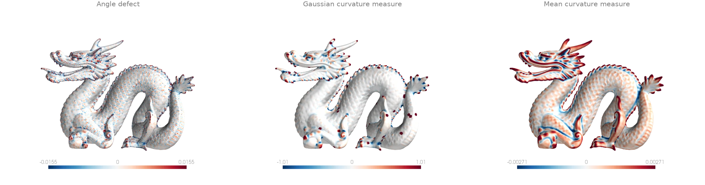
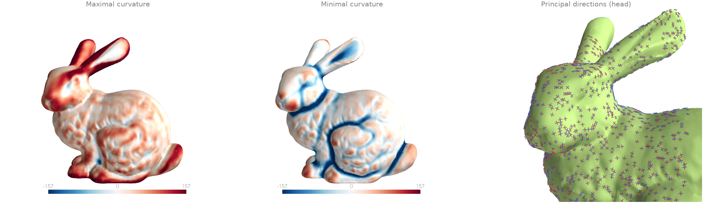
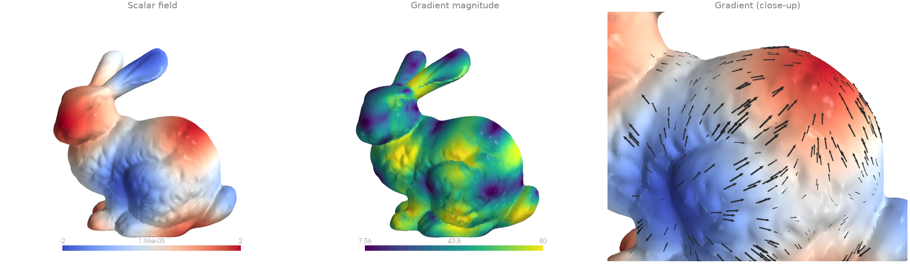
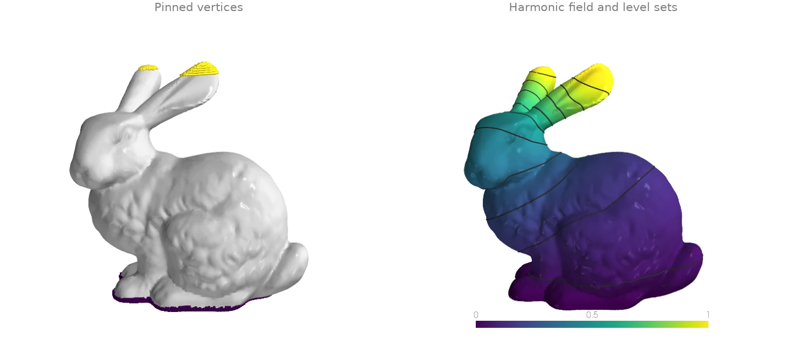
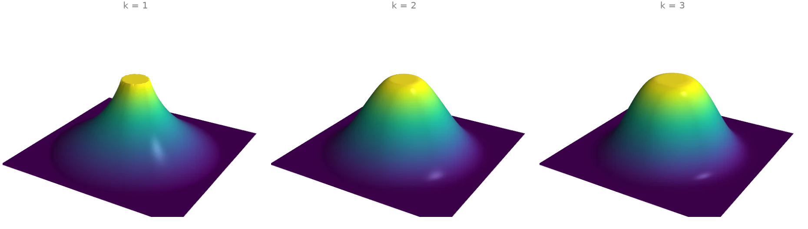
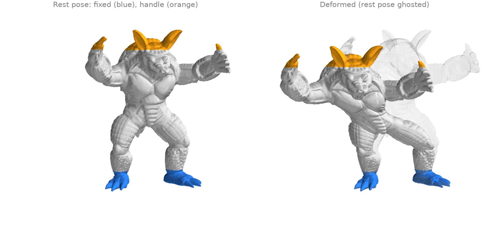
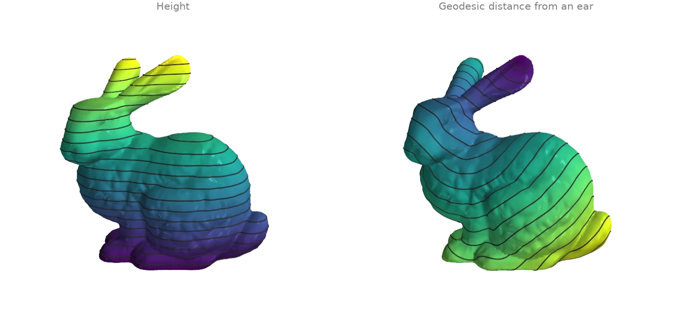
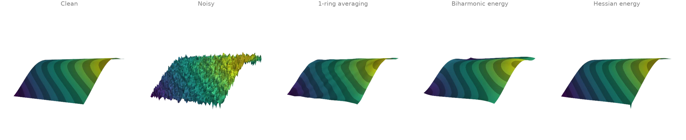
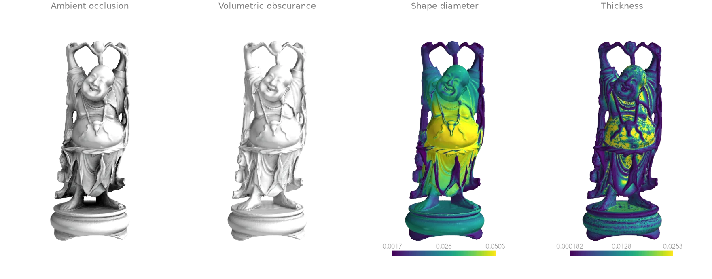
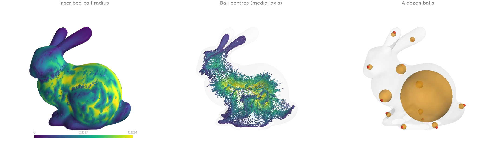

Curvature and differential operators
Curvature, gradients, Laplace-type equations, and per-vertex shape descriptors.
Gaussian and mean curvature
Three curvature fields on the Stanford dragon.
vertex_defects is the pointwise angle defect, 2pi minus
the corner angles at a vertex, the discrete Gaussian curvature integrated over the vertex's
neighbourhood; it is sharp and noisy on a scan.
discrete_gaussian_curvature and
discrete_mean_curvature are the Cohen-Steiner and
Morvan curvature measures of a ball around each query point: the defects inside the ball, and
the dihedral angles of the edges inside it weighted by their length. A wider ball averages over
more surface. Colour ranges clip at the 90th percentile of the magnitude: the scan's holes and
stray patches put a few large values in the tails.
import numpy as np
import ordito as od
from examples import data
vertices, faces = data.load("dragon", device)
angles = od.triangles.face_angles(vertices, faces)
defects = od.vertices.vertex_defects(vertices.shape[0], faces, angles)
radius = 4.0 * od.edges.mean_edge_length(vertices, faces)
gaussian = od.curvature.discrete_gaussian_curvature(vertices, vertices, faces, angles, radius)
mean = od.curvature.discrete_mean_curvature(vertices, vertices, faces, radius)
print(f"{vertices.shape[0]} vertices, ball radius {radius:.5f}")
print(f"median |mean curvature measure| {np.median(np.abs(mean.numpy())):.3g}")
437645 vertices, ball radius 0.00181
median |mean curvature measure| 0.000791

Modelled on: libigl 202 · trimesh: curvature · PyVista: curvature
Principal curvatures and directions
principal_curvature fits a quadric to the
neighbourhood of every vertex (a ball of a few mean edge lengths) and returns the two principal
curvatures with their directions: the directions in which the surface bends most and least.
The close-up draws both direction fields as short line segments, maximal curvature in red and
minimal in blue; they follow the ridges and valleys of the bunny's face and ears.
import numpy as np
import ordito as od
from examples import data
vertices, faces = data.load("bunny", device)
direction_max, direction_min, k_max, k_min = od.curvature.principal_curvature(
vertices, faces, radius=5
)
k_max, k_min = k_max.numpy(), k_min.numpy()
print(f"k_max >= k_min at every vertex: {bool(np.all(k_max >= k_min))}")
print(f"median curvatures: k_max {np.median(k_max):.1f}, k_min {np.median(k_min):.1f}")
k_max >= k_min at every vertex: True
median curvatures: k_max 45.5, k_min 1.3

Modelled on: libigl 203 · PyMeshLab: filters
Gradient of a scalar field
A smooth pattern of hills and valleys defined on the bunny's vertices, and its gradient from
face_gradients: on each triangle the linear interpolant
of the vertex values has one constant gradient, which lies in the triangle's plane. The arrows
point uphill; the magnitude vanishes on hilltops, valley floors and saddles, and the scan's
small bumps show through it because the gradient is taken along the surface.
import numpy as np
import warp as wp
import ordito as od
from examples import data
vertices, faces = data.load("bunny", device)
x, y, _ = vertices.numpy().T.astype(np.float64)
field = np.sin(60.0 * x) + np.sin(60.0 * y)
values = wp.array(field, dtype=wp.float64, device=device)
gradients = od.laplacian.face_gradients(vertices, faces, values) # (n_faces,) wp.vec3d
magnitude = np.linalg.norm(gradients.numpy(), axis=1)
print(f"{gradients.shape[0]} face gradients")
print(f"|grad f| from {magnitude.min():.2f} to {magnitude.max():.1f}")
69451 face gradients
|grad f| from 0.33 to 84.8

Modelled on: libigl 204 · PyVista: gradients
Laplace equation with Dirichlet conditions
The harmonic function on the bunny that is 0 on its base and 1 at the tips of its ears.
cotmatrix builds the cotangent Laplacian L, and
min_quad_with_fixed minimises the Dirichlet energy x^T
(-L) x / 2 with the pinned vertices held at their values, which solves Lx = 0 on the free
ones. marching_triangles traces level sets of the
solution; they crowd where the heat would flow fastest, around the neck and the ears.
import warp as wp
import ordito as od
from examples import data
vertices, faces = data.load("bunny", device)
height = vertices.numpy()[:, 1]
base = height < height.min() + 0.005
ears = height > height.max() - 0.008
laplacian = od.laplacian.cotmatrix(vertices, faces, dtype=wp.float64)
q = od.energies.k_harmonic(laplacian, k=1) # the Dirichlet energy -L
fixed = wp.array(base | ears, dtype=wp.bool, device=device)
fixed_values = od.typing.as_array2d(
wp.array(ears[None].astype(np.float64), dtype=wp.float64, device=device), wp.float64
)
solution, free_map, n_free = od.linalg.min_quad_with_fixed(q, fixed, fixed_values)
field = ears.astype(np.float64) # pinned values, then the solved free ones
free = ~(base | ears)
field[free] = solution.numpy()[0][free_map.numpy()[free]]
print(f"{n_free} free vertices, {base.sum()} pinned to 0, {ears.sum()} pinned to 1")
values = wp.array(field, dtype=wp.float64, device=device)
isolines = [
od.intersection.marching_triangles(vertices, faces, values, level)[0]
for level in np.linspace(0.05, 0.95, 10)
]
31733 free vertices, 2826 pinned to 0, 275 pinned to 1

Modelled on: libigl 303 · PyMeshLab: filters
Polyharmonic surfaces (k = 1, 2, 3)
A flat square grid from grid is pinned at height 0 outside a circle
and at height 1 on a small disk in its middle; the heights in between minimise a k-harmonic
energy. k_harmonic composes the operator
(-L) (M^-1 (-L))^(k-1) from the cotangent Laplacian of
cotmatrix and the lumped mass of
mass_matrix_entries, and
min_quad_with_fixed solves for the free heights. Each
step up in k makes the surface smoother where it meets the pinned regions: k = 1 leaves a kink
at both rims, k = 2 meets them with a continuous slope, k = 3 also with a continuous
curvature, which widens the shoulders.
import warp as wp
import ordito as od
vertices, faces = od.creation.grid(count=(101, 101), extents=(2.0, 2.0), device=device)
radius = np.linalg.norm(vertices.numpy()[:, :2], axis=1)
outside, top = radius > 0.9, radius < 0.15
pinned = outside | top
laplacian = od.laplacian.cotmatrix(vertices, faces, dtype=wp.float64)
mass = od.laplacian.mass_matrix_entries(vertices, faces, dtype=wp.float64)
fixed = wp.array(pinned, dtype=wp.bool, device=device)
heights = od.typing.as_array2d(
wp.array(top[None].astype(np.float64), dtype=wp.float64, device=device), wp.float64
)
surfaces = {}
for k in (1, 2, 3):
q = od.energies.k_harmonic(laplacian, mass, k=k)
solution, free_map, _ = od.linalg.min_quad_with_fixed(q, fixed, heights)
z = top.astype(np.float64)
z[~pinned] = solution.numpy()[0][free_map.numpy()[~pinned]]
surfaces[k] = z
print(f"k = {k}: height at radius 0.5 is {z[np.abs(radius - 0.5) < 0.02].mean():.3f}")
k = 1: height at radius 0.5 is 0.323
k = 2: height at radius 0.5 is 0.457
k = 3: height at radius 0.5 is 0.486

Modelled on: libigl 401 · libigl 402
Handle-based biharmonic deformation
The armadillo's feet are held in place and the top of the scan (its head, ears and raised
claws) is moved as one handle; every other vertex moves by the
displacement that minimises the biharmonic energy, the operator
k_harmonic builds at k = 2 from
cotmatrix and
mass_matrix_entries.
min_quad_with_fixed solves the three coordinates of the
displacement as three right-hand sides of one system. The displacement is smooth, so the body
bends as a whole and its surface detail rides along unchanged; the multigrid preconditioner
keeps the fourth-order solve over the full 173 k-vertex scan short.
import numpy as np
import warp as wp
import ordito as od
from examples import data
vertices, faces = data.load("armadillo", device)
rest = vertices.numpy()
height = rest[:, 1]
span = height.max() - height.min()
feet = height < height.min() + 0.1 * span
head = height > height.max() - 0.12 * span # head, ears and claw tips
displacement = np.zeros((3, len(rest))) # one row per coordinate
displacement[:, head] = np.array([[50.0], [-15.0], [-20.0]])
laplacian = od.laplacian.cotmatrix(vertices, faces, dtype=wp.float64)
mass = od.laplacian.mass_matrix_entries(vertices, faces, dtype=wp.float64)
q = od.energies.k_harmonic(laplacian, mass, k=2)
pinned = feet | head
solution, free_map, n_free = od.linalg.min_quad_with_fixed(
q,
wp.array(pinned, dtype=wp.bool, device=device),
wp.array(displacement, dtype=wp.float64, device=device),
preconditioner="multigrid",
)
displacement[:, ~pinned] = solution.numpy()[:, free_map.numpy()[~pinned]]
deformed = rest + displacement.T
print(f"{n_free} free vertices, {feet.sum()} fixed, {head.sum()} moved")
136647 free vertices, 17157 fixed, 19170 moved

Modelled on: libigl 401 · MeshLib: Laplacian deformation
Isolines of a scalar field
marching_triangles_with_offsets cuts
the level set f = c of a per-vertex field out of every triangle and links the pieces into
curves, returned packed: all points, the offsets where each curve starts, and whether it
closes. split unpacks them into one array per curve. Two fields on the
bunny: its height, whose level sets are horizontal slices, and the geodesic distance from the
tip of an ear by heat_geodesic, whose level sets are geodesic
circles.
import warp as wp
import ordito as od
from examples import data
vertices, faces = data.load("bunny", device)
height = wp.array(vertices.numpy()[:, 1], dtype=wp.float32, device=device)
ear = wp.array([22820], dtype=wp.int32, device=device)
distance = od.heat.heat_geodesic(vertices, faces, ear)
curves = {}
for name, field in (("height", height), ("distance", distance)):
values = field.numpy()
curves[name] = []
for level in np.linspace(values.min(), values.max(), 22)[1:-1]:
points, offsets, _closed = od.intersection.marching_triangles_with_offsets(
vertices, faces, field, float(level)
)
curves[name] += od.array.split(points, offsets)
print(f"{name}: {len(curves[name])} curves over 20 levels")
height: 25 curves over 20 levels
distance: 31 curves over 20 levels

Modelled on: libigl 905 · potpourri3d · PyVista: contouring
Smoothing a noisy scalar field
A smooth function on a square (a ramp plus a wave, drawn as a height field), corrupted by noise,
and three ways to recover it.
filter_scalar_laplacian repeatedly averages each
value with its one-ring. The other two solve (M + alpha Q) u = M f: stay close to the noisy
field f in the mass-weighted norm while keeping a smoothness energy u^T Q u small. With the
biharmonic energy from k_harmonic, Q assumes the field is flat
across the boundary and bends the ramp there; the Hessian energy from
hessian_energy has natural boundary conditions and no
penalty on linear functions, so the ramp keeps its slope up to the rim.
curved_hessian_energy is its counterpart for a curved
surface.
import numpy as np
import warp as wp
import ordito as od
vertices, faces = od.creation.grid(count=(81, 81), extents=(2.0, 2.0), device=device)
x, y, _ = vertices.numpy().T.astype(np.float64)
clean = 1.5 * x + np.cos(2.5 * y)
noisy = clean + np.random.default_rng(0).normal(0.0, 0.25, clean.shape)
averaged = od.smoothing.filter_scalar_laplacian(
wp.array(noisy, dtype=wp.float32, device=device), vertices, faces, iterations=30
)
# Minimise |u - f|^2_M + alpha u^T Q u, i.e. solve (M + alpha Q) u = M f, for two energies Q.
# M is the diagonal lumped mass matrix, so M f is a per-vertex product.
lumped = od.laplacian.mass_matrix_entries(vertices, faces, dtype=wp.float64)
mass = od.typing.bsr_diag(lumped)
mass_f = wp.array(lumped.numpy() * noisy, dtype=wp.float64, device=device)
laplacian = od.laplacian.cotmatrix(vertices, faces, dtype=wp.float64)
energies = {
"biharmonic": od.energies.k_harmonic(laplacian, lumped, k=2),
"hessian": od.energies.hessian_energy(vertices, faces),
}
smoothed = {}
for name, q in energies.items():
system = od.typing.bsr_axpy(od.typing.bsr_copy(q), od.typing.bsr_copy(mass), alpha=1e-3)
u = wp.zeros_like(mass_f)
od.linalg.solve_spd(system, mass_f, u)
smoothed[name] = u.numpy()
rim = (np.abs(x) > 0.95) | (np.abs(y) > 0.95)
for name, u in {"1-ring average": averaged.numpy(), **smoothed}.items():
error = u - clean
print(
f"{name}: RMS error {np.sqrt(np.mean(error**2)):.3f} overall, "
f"{np.sqrt(np.mean(error[rim] ** 2)):.3f} along the boundary"
)
1-ring average: RMS error 0.038 overall, 0.093 along the boundary
biharmonic: RMS error 0.090 overall, 0.205 along the boundary
hessian: RMS error 0.028 overall, 0.043 along the boundary

The spike at one corner of the Hessian-smoothed square is the noise of that corner vertex surviving: it belongs to a single triangle, so the energy constrains it weakly.
Modelled on: libigl 712 · PyMeshLab: filters
Ambient occlusion, obscurance, shape diameter and thickness
Four ray-traced per-vertex descriptors of the happy Buddha, all cast against one wp.Mesh
BVH.
ambient_occlusion: the share of the outward hemisphere blocked by the model, shown as the light that gets through.volumetric_obscurance: the same, with each occluder countedexp(-tau * t)by its distancet, so only nearby geometry darkens a point; it brings out the folds of the robe that a far wall hides in plain occlusion.shape_diameter: the robust mean length of a cone of rays fired inwards, the local diameter of the volume.thickness: twice the radius of the largest ball inside the volume touching the point. One ball per point is cheap but follows every small bump of the scan, hence the speckle where the shape diameter is smooth.
import numpy as np
import warp as wp
import ordito as od
from examples import data
vertices, faces = data.load("buddha", device)
mesh = wp.Mesh(points=vertices, indices=faces)
normals = od.vertices.vertex_normals(vertices, faces)
diagonal = od.bounds.enclosing_diagonal(vertices)
occlusion = od.visibility.ambient_occlusion(mesh, vertices, normals=normals)
obscurance = od.visibility.volumetric_obscurance(
mesh, vertices, normals=normals, tau=40.0 / diagonal
)
diameter = od.visibility.shape_diameter(mesh, vertices, normals=normals)
thickness = od.visibility.thickness(mesh, vertices, normals=normals)
print(f"{vertices.shape[0]} vertices, mean occlusion {occlusion.numpy().mean():.3f}")
finite = np.isfinite(diameter.numpy())
print(
f"shape diameter: {finite.sum()} finite, median {np.median(diameter.numpy()[finite]):.4f}"
)
543652 vertices, mean occlusion 0.301
shape diameter: 543621 finite, median 0.0212

Modelled on: libigl 606 · PyMeshLab: filters · MeshLib: thickness
Maximal inscribed spheres and the medial axis
After filter_laplacian removes the scan's small bumps,
max_tangent_sphere shrinks a ball touching the surface
at each face centroid, from the inside, until it touches the surface nowhere else. Its radius is
a local thickness, and its centre lies on the medial axis: the centres of the larger balls trace
the bunny's skeleton, a sheet down its body and curves along its ears. Balls touching a small
crease stay tiny, so the skeleton view keeps balls above a tenth of the largest radius.
import numpy as np
import warp as wp
import ordito as od
from examples import data
vertices, faces = data.load("bunny", device)
# The scan's millimetre bumps cap every ball touching them; smooth them away first.
vertices = od.smoothing.filter_laplacian(vertices, faces, iterations=20)
mesh = wp.Mesh(points=vertices, indices=faces)
# Touch every face at its centroid, where the surface is flat: at a vertex the ball must
# also clear the faces around it, which pins it small wherever the scan is bumpy.
face_normals, _ = od.triangles.face_normals_and_areas(vertices, faces)
corners = vertices.numpy()[faces.numpy().reshape(-1, 3)]
centroids = wp.array(corners.mean(axis=1), dtype=wp.vec3, device=device)
centers, radii = od.visibility.max_tangent_sphere(mesh, centroids, normals=face_normals)
radii = radii.numpy()
medial = radii > 0.1 * radii.max()
print(f"largest inscribed ball: radius {radii.max():.4f}, median {np.median(radii):.4f}")
print(f"{medial.sum()} of {radii.size} balls above a tenth of the largest")
largest inscribed ball: radius 0.0412, median 0.0148
62492 of 69451 balls above a tenth of the largest

Modelled on: trimesh: examples · MeshLib: thickness